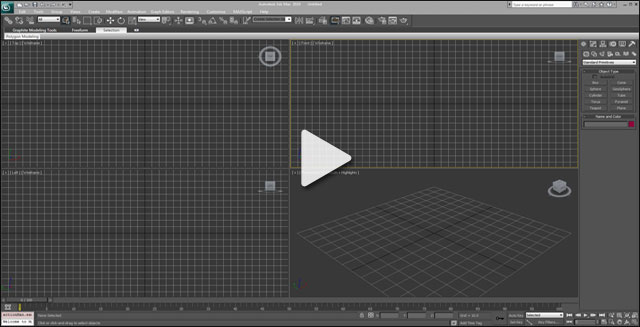
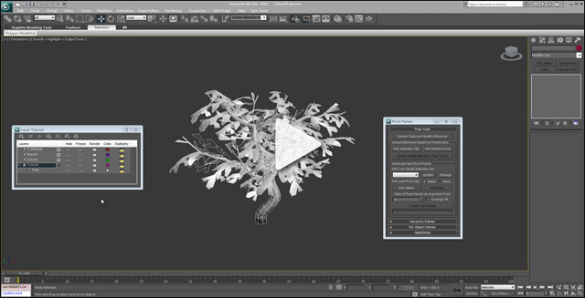

UDN
Search public documentation:
PivotPainterToolKR
English Translation
日本語訳
中国翻译
Interested in the Unreal Engine?
Visit the Unreal Technology site.
Looking for jobs and company info?
Check out the Epic games site.
Questions about support via UDN?
Contact the UDN Staff
日本語訳
中国翻译
Interested in the Unreal Engine?
Visit the Unreal Technology site.
Looking for jobs and company info?
Check out the Epic games site.
Questions about support via UDN?
Contact the UDN Staff
피벗 페인터 툴
문서 변경내역: Jeff Wilson 작성. 홍성진 번역.
개요
설치
[UE3Directory]/Engine/Extras/3dsMaxScripts/PivotPainter.ms
여기서 직접 Pivot Painter 스크립트를 내려받으실 수도 있습니다: PivotPainter.ms (우클릭 후 다른 이름으로 저장)
스크립트를 설치하고 키보드 단축키와 피벗 페인터 툴을 열기 위한 메뉴를 만드는 법을 다루는 비디오입니다.

(클릭하면 비디오가 재생됩니다.)프렙 툴 (Prep Tools)

(클릭하면 비디오가 재생됩니다.)하이어아키 페인터 (Hierarchy Painter)
 (클릭하면 비디오가 재생됩니다.)
(클릭하면 비디오가 재생됩니다.)
오브젝트별 페인터 (Per Object Painter)
 (클릭하면 비디오가 재생됩니다.)
(클릭하면 비디오가 재생됩니다.)
언리얼 셰이더 예제
-
[UE3Directory]/UDKGame/Content/TestPackages/UDNExamples/PivotPainterExamples.upk -
[UE3Directory]/UDKGame/Content/Maps/Examples/PivotPainter_Examples.udk
3D Studio Max 예제 파일
- Tree.max (우클릭 후 다른 이름으로 저장)
튜토리얼과 자막 파일
요구사항
- 3D Studio Max - 스크립트는 3D Studio Max 2010 / 2012 로 테스트했습니다.
- (2012년 1월 빌드부터 사용 가능한) Pivot Painter 머티리얼 함수. 함수 없이도 스크립트를 사용할 수는 있으나, 데이터 사용이 훨씬 불편해 집니다.